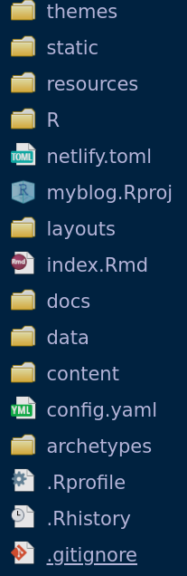
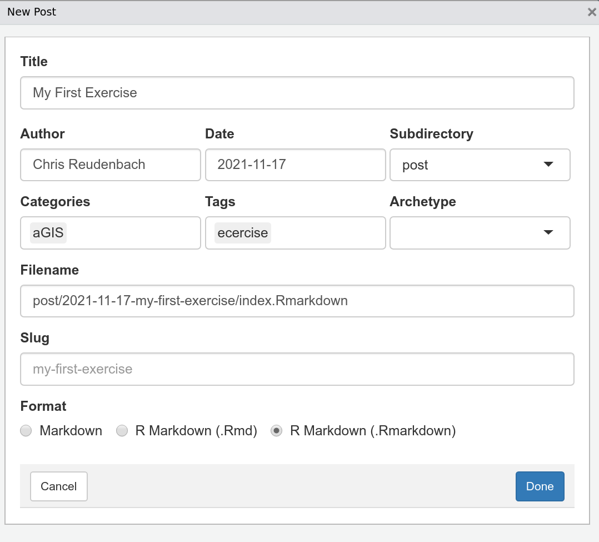

Setting up the blogdown Project
We will use blogdown as an incredible easy to use an effiecient tool for setting up websites and producing content. First you need to install the neccessary packages:
# Install blogdown
install.packages("blogdown")
# Install the "hugo" website framework
blogdown::install_hugo(force = TRUE)
library(blogdown)
To initialize a blogdown website I strongly recommend to use the menu bar of RStudio.
RStudio toolbar -> File -> New Project -> New Directory -> blogdown website- Copy
gisma-courses/hugo-theme-cleanwhite-gcinto the Hugo theme field - activate
Open in new session - Click on
Create Project
After some seconds you will see the new website project.

Basically all content is placed in the content folder and all resources that you want to serve manually, is put under the static folder.
Please first check if the Git tab is already visible. If so, please navigate to Project Options -> Git/SVN and set Version control systems to none. this will avoid later hazzles.
Mandatory Adaptions
You must once open the config.yaml file which is located in the root folder of the new course and adapt at least title, URL and publishDir. This settings are found at the beginning of the yaml file:
baseurl: https://your-github-name.github.io/your-repo-name # Website URL
publishDir: docs
title: name-of-my-blog # Website Name
Now please delete the folder public
Build the pages
Now build the site for publishing.
blogdown::build_site(build_rmd = TRUE)
# for singele pages you may use
blogdown::build_site(build_rmd = "page-name")
The argument build_rmd = TRUE forces a rebuild of all Rmarkdown files.
Serve the site locally
With blogdown::build_serve() you start the local server and the compiled site is shown in the viewer pane. Alternatively you may also use the GUI via RStudio toolbar -> Serve -> Addins -> Serve Site.
Basically you start serving the website on localhost (means on the web-server as provided by RStudio). You notice that the site is visualized in the viewer pane. You easily can shift the view to your default browser by clicking on the symbol next right to the cleaning brush.
Setting up the version control
Up to now you are fine with a locally running website for ducumentation purposes. To get it on air you need to push this whole site to a GitHub repository. So you need to do the following steps: 2. Initialize Git localy 2. Setup Git for Rstudio 3. Setup git for Rstudio 2. Mark (track) and commit all files in the project 2. Set up the corresponding GitHub repository and push the files
Step 4 and 5 are the typical steps running a version control system
Initialize Git
Now we can set up version control and GitHub connections. Navigate to:
RStudio toolbar -> Tools -> Project Options -> Version Control -> select git
and confirm your choice. You notice that the Git tab is included now.
Setup git for Rstudio (if not already done)
Use your GitHub credentials.
git config --global user.email "your-name@your.email"
git config --global user.name "your github name"
Track all project files.
*Solution 1: *
Tick all files in the git pane of RStudio -> click on Commit add “First commit” in the text field and click again on commit.
*Solution 2: * switch to the terminal tab (beside the console tab) and type:
git add --allgit commit -m "First commit"
Setting up the corresponding GitHub repository
- Create a new repository on your GitHub account without adding anything
- Link your local repo to remote repo by switching back to the terminal tab and type:
git remote add origin https://github.com/gisma-courses/myBlog.git
# please note due tu inlusion codex Github is changing the default branch name from master to main so please check and adapt
git push -u origin main
You obviously Have to sign in with either a webbased login or with your token.
If you want - publish your Website on Github
- Navigate on GitHub to
Repository -> Settings -> Pages - Select
Source -> Master Branch - Select
Folder -> /docs Save
You will get a message like:
If everything is fine it will switch over to green (takes some minutes).
GitHub Pitfalls
For windows it is assumed that you use the current client. It is strongly suggested to use notepad++ as editor which will be asked to choose during installation. To initialize this version of git`` withRStudioyou need to navigate to ``Tools->Global Options->Git/SVN tick Enable version control interface for RStudio projects and navigate to the Git executables which is commonly found under C:/Program Files/Git/bin/git.exe.
Adding Content
After successfully setting up the blogdown website and connecting it to gihub for version control and publishing, the next task is obviuosly to produce content - e.g. the exercises.
The handling is very simple and clearly organised. Even though everything can be done via the command line, I recommend using the addins menu:
Addins -> New Post
You start the common GUI for creating a so called post which means an article for your website.

- The
titleis self-explanatory. AuthorandDateare entered automatically, but can be changed.- The
subdirectoryshould also remain at default (post). Categories,TagsandArchetypesshape the navigation and organisational structure and they are crucial.Categoriescan be freely assigned. However, it should be noted that they are automatically listed in the menu under the Menu Categories in order to structure the blogs. This also applies to theTags. I suggest always using the same category for this course (e.g.aGIS) and usingExercisesas Tag for exercises. Each typing error will of course be converted into its own tag or category.
- There are templates, the so-called
Archetypesfrom which you should usedsci-report.mdfor all exercises if not otherwise stated. - The last step is to select the
Format. For all R-related content, I highly recommend selectingRmarkdown.
After clicking Done you have generated your new article with some structural information and in addition some hints how to deal with R-commands. Please delete this exemplary content when you edit this file. If you are finished you easily can use the RStudio Git MEnu to Commit and Push the content to GitHub.
If you want to add images etc. you should use the corresponding Menu->Addins->Insert Image workflow.
Wrap up
After these steps and adjustments you have a fully functional blogging website that translates both Markdown and Rmarkdown content and makes it available as web content. The choosen hugo-theme-minima-gisma theme is a slightly adapted from the hugo-theme-minima theme. It provides templates for dealing with the assesments.
Of course you are welcome to choose other themes. There are countless. However, you should make sure that they offer Rmarkdown support.
Comments & Suggestions
Questions and mistakes but also suggestions and solutions are welcome.
Due to an occasionally faulty page redirection, a 404 error may occur. please use the alternative